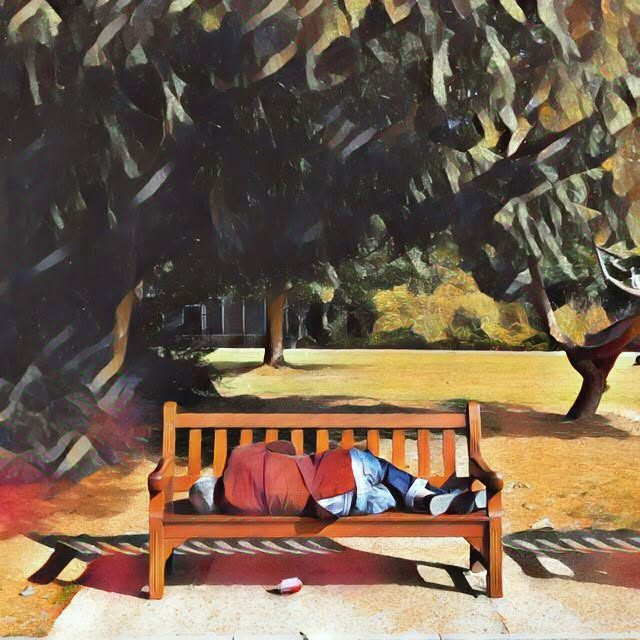

街友
2017-11-13

「理想中的美好家園，自備百萬即刻入住」
〈街友〉
急促腳步在耳邊來回踩踏，他睜開惺忪睡眼坐起，懶洋洋收拾紙箱離開騎樓，將隨身家當塞進麻布袋放在公園涼椅上，到公廁漱口洗臉，對著鏡子套上那件鬆垮的灰底格紋西裝外套。
午後的太陽烈得像焰，對面大樓玻璃帷幕反射刺眼的光，匆匆路人像水流般滑過身邊，「嘖！」快步走向捷運口的套裝女子投來不耐目光，他趕緊往旁移動兩步，雙手仍盡責舉著木牌，外套內的臂膀汗如雨下。
每當紅燈亮起，他才抬起頭直視眼前橫向交錯川流的車輛；一旦大批行人踩著斑馬線筆直朝他湧來，他便低頭盯著爬滿外套的毛球。
「啊！」他發現第二顆鈕扣鬆脫了，棕色塑膠圓扣攀著一條虛弱的線，在扣眼旁輕輕晃蕩。
他空出右手輕撫那顆搖搖欲墜的紐扣，左手舉著的木牌上寫著「理想中的美好家園，自備百萬即刻入住」，迎面走來一對抱著孩子的年輕夫妻，留著捲髮的太太伸手理好男子的衣領，笑著不知說了些什麼。
每當他想起妻，就會默念一次木牌上的廣告標語，下意識撫平外套領口的皺摺。
捏著舉牌一天換來的幾張紅色紙鈔，他鑽進亮起燈火的陰溼巷弄，穿越乾麵滷味的熱騰香氣，殘障廁所想必已被佔滿，乾脆到雜貨店買兩瓶啤酒跟花生米，結帳時他猶豫兩秒，「有賣針線包嗎？」
一大包麻布袋靜靜歪躺在涼椅上，不遠處有群婆媽跟著嘈雜音樂跳土風舞，他攤平紙箱坐了下來，聞到自己身體發酵出酸悶的汗臭。
「啵！」扯開啤酒拉環的瞬間，他外套上那顆鈕扣應聲掉落，輕巧地一路滾進水溝孔。
流亡的黃昏裡，
用故事，暖你的心。
故事柑仔店。